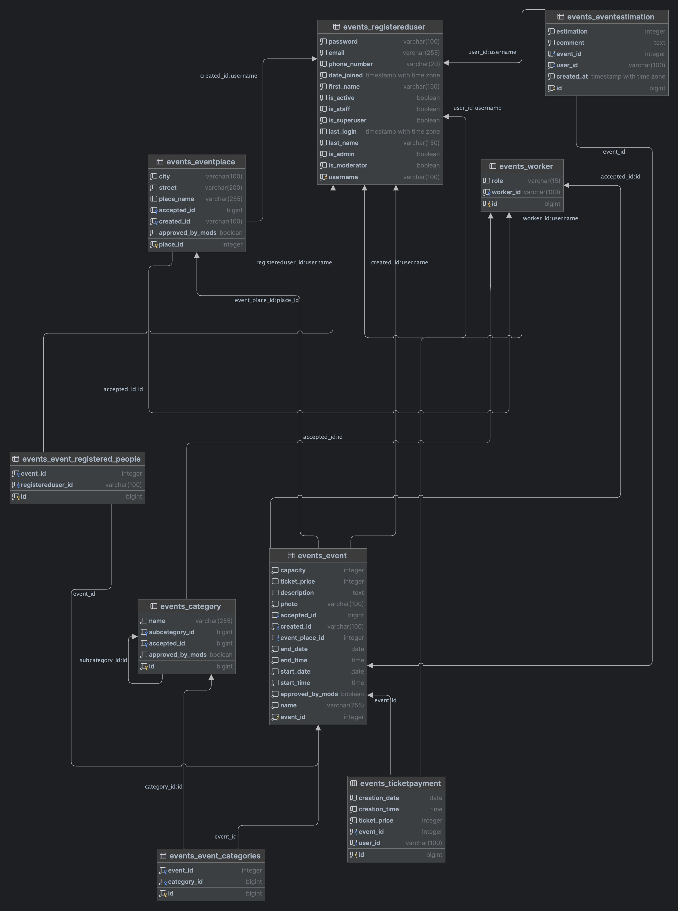

Akce a události
- Autoři
- Kambulat Alakaev
xalaka00@stud.fit.vutbr.cz -
databáze, HTML šablony, backend
- Dias Assatulla
xassat00@stud.fit.vutbr.cz -
HTML šablony, backend, hosting
- Kateryna Zdebska
xzdebs00@stud.fit.vutbr.cz -
design, backend, testování
- URL aplikace
- https://xassat00iis.codes
Uživatelé systému pro testování
| Login | Heslo | Role |
|---|
| xblanco00 | user_pass | Uživatel |
| user_login | user_pass | Uživatel |
| xassat00 | user_pass | Administrátor |
| xapada00 | user_pass | Moderátor |
| moder_login | user_pass | Moderátor |
Video
https://youtu.be/t76pSxIth_A
Ve videu není uvedeno, že pokud chcete po použití filtrů na zobrazení událostí znovu zobrazit všechny události, musíte kliknout na tlačítko "CALENDAR" v levém horním rohu a filtr se resetuje.
Implementace
Projekt je napsán pomocí frameworku Django, který využívá MVT(Model-View-Templates). Projekt je rozdělen do několika částí podle MVT. Model představuje sebou databázi celé aplikace a je realizován v souboru "models.py". Templates jsou stránky s kódem HTML, do kterých se vkládají data z modelu na základě akcí prováděných uživatelem. Pro zajíštění možnosti dosazování dat do HTML šablon využiváme jazyk Jinja2. Šablony jsou umistěny ve složce "Templates". View představují funkce, které se provádějí na základě akcí uživatele a naplňují šablony příslušnými daty. Hlavními částmi projektu jsou soubory "models.py", "views.py", "forms.py" a "urls.py", kde se provádí směrování url. Soubor views.py je to pravé místo, kde se odehrává většina logiky IS. Funkce v tomto souboru lze rozdělit na 3 skupiny:
1. Funkce určené pro administrátory a moderátory, pomocí kterým lze spravovat systém;
2. Funcke určené pro registrovaného uživatele;
3. Funkce přístupné i pro neregistrovaného uživatele.
Všechny views jsme napsali sami a práva na použití funkcí z výše uvedených skupin kontrolují naši vlastní dekoratory.
Databáze

Instalace
Instalace pomocí Docker
Prerekvizity:
Stručný popis:
- Přesun do složky s manage.py - cd calendar_site/
- Vytvoření docker build/kontejneru - docker-compose build
- Spuštění kontejneru - docker-compose up
- Stránka bude dostupná na adrese "localhost:8000"
Jsme používali Docker jenom pro učely testování IS. Program na serveru běží bez Docker.
Instalace bez Docker
Prerekvizity:
- Python 3.10+
- Django 4.1+
- pytz 2023.3.post1
Stručný popis:
- Ve složce s projektem(calendar_site) do terminalu napsat: python3 -m venv env
- Pro aktivaci virtuálního okolí(linux/Mac OS): source env/bin/activate
- Pro stažení potřebných knihoven: pip install -r requirements.py
- nastavení databáze a vytvoření tabulek - python3 manage.py migrate
- naplnění vstupními daty(vytvoření uživatelů, atd.) - python3 manage.py shell < events/create_data.py
- Spuštění serveru - python3 manage.py runserver
- Stránka je nyní dostupná na adrese "127.0.0.1:8000"
Server pracuje na OS Debian, funguje pomocí Google Clouds s nginx + gunicorn.